五案例总览
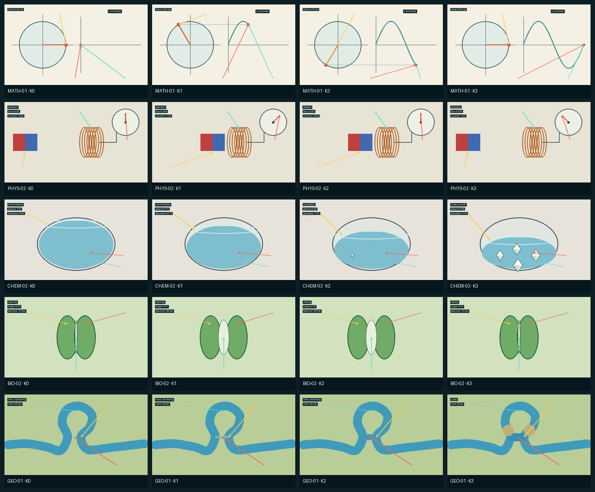
先看结论：每个案例现在走哪条路
| 案例 | 当前关键帧策略 | 自评 |
|---|---|---|
MATH-01 | 程序几何 + 可选底纸纹理 gain=0.5 | 通过；不照片化 |
PHYS-02 | 程序器材 + 磁铁内部哑光纹理 gain=0.6 | 通过；案例候选 |
CHEM-02 | 确定性四晶面着色，图像模型关闭 | 通过；模型路线拒绝 |
BIO-02 | 程序细胞 + 保卫细胞纹理 gain=0.3 | 通过；案例候选 |
GEO-01 | 程序水体拓扑 + 水纹 gain=0.4 | 通过；跨学科路线 |
十案例不再共用一条生图路线
下面的选择器只读取能力标签和语义层类型，不读取案例 ID。精确计数、器材边界、 连续材质以及“静态环境 + 动态场”分别承担不同的模型职责。
| 案例 | 数据类型路线 | 图像模型职责 |
|---|---|---|
MATH-01 | program_geometry_with_region_limited_material | 程序像素保留数量、身份、读数和拓扑；模型只提供允许区域内的限幅稳健材质残差。 |
MATH-02 | program_geometry_with_region_limited_material | 程序像素保留数量、身份、读数和拓扑；模型只提供允许区域内的限幅稳健材质残差。 |
PHYS-01 | program_low_frequency_with_robust_material_residual | 程序保存连续场和大尺度形状；模型供体只贡献多种子中位数中高频材质。 |
PHYS-02 | program_geometry_with_region_limited_material | 程序像素保留数量、身份、读数和拓扑；模型只提供允许区域内的限幅稳健材质残差。 |
CHEM-01 | semantic_boundary_t2i_with_program_state_overlay | 语义充分线稿生成固定玻璃器材；液面、颜色场、液滴和教学标记由程序在后续状态层控制。 |
CHEM-02 | program_geometry_with_region_limited_material | 程序像素保留数量、身份、读数和拓扑；模型只提供允许区域内的限幅稳健材质残差。 |
BIO-01 | program_geometry_with_region_limited_material | 程序像素保留数量、身份、读数和拓扑；模型只提供允许区域内的限幅稳健材质残差。 |
BIO-02 | program_geometry_with_region_limited_material | 程序像素保留数量、身份、读数和拓扑；模型只提供允许区域内的限幅稳健材质残差。 |
GEO-01 | program_geometry_with_region_limited_material | 程序像素保留数量、身份、读数和拓扑；模型只提供允许区域内的限幅稳健材质残差。 |
GEO-02 | layered_static_scene_and_dynamic_field | 图像模型只生成静态地形材质；程序根据 scalar/vector field 在生成后绘回云雨等动态机制。 |
MATH-01
单位圆生成正弦曲线
机制目标：圆周点纵坐标与曲线当前值严格同步，轨迹只向前增长。
{kind=link}
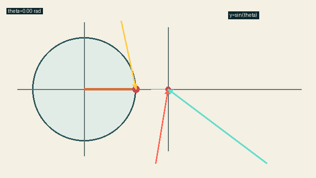
{kind=link}
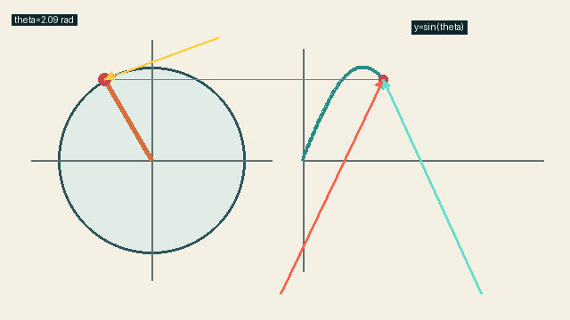
{kind=link}
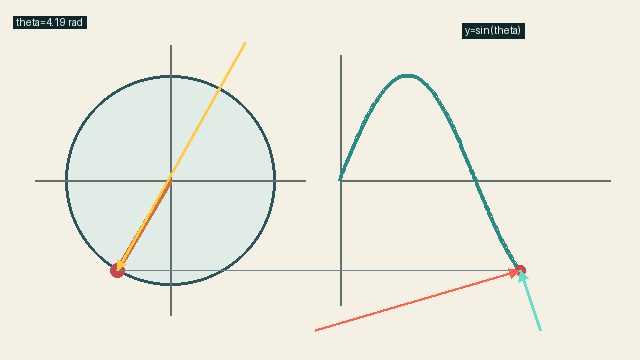
{kind=link}
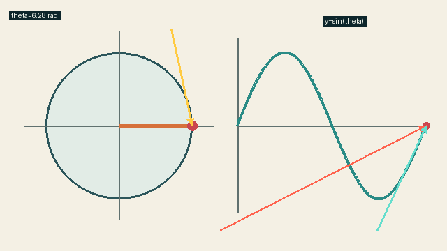
程序状态断言
circle_and_curve_vertical_coordinates_match：通过one_turn_draws_one_period：通过trace_never_retracts：通过
K2 的语义层
| ID | 类型 | 含义 | 模型策略 |
|---|---|---|---|
math01_hard_boundary | hard_boundary | 固定单位圆、绘图区坐标轴和镜头。 | 由路由决定 |
math01_paper_region | region | 只包含程序底色像素，不包含圆、坐标轴、半径、曲线或运动点。 | 由路由决定 |
math01_point_identity | object_identity | 保存同一个运动点在圆和曲线中的对应位置。 | 由路由决定 |
math-01_annotation | annotation | 程序在写实底图之后叠加的重点箭头。 | 禁止 |
{kind=link}
PHYS-02
磁通变化产生电磁感应
机制目标：靠近与撤离电流方向相反，磁铁停止时电流归零。
{kind=link}
{kind=link}
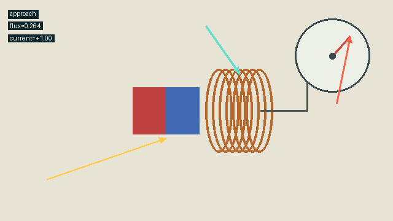
{kind=link}
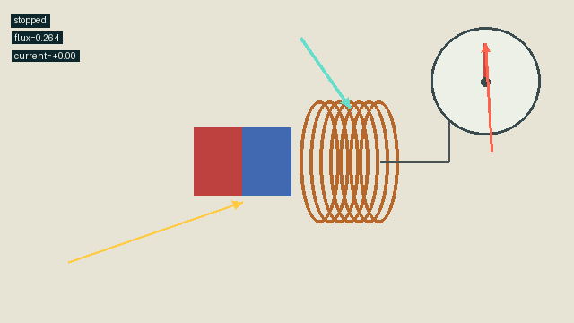
{kind=link}
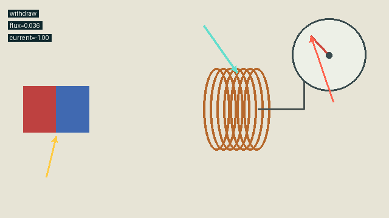
程序状态断言
approach_stop_withdraw_current_signs：通过nearby_stationary_magnet_has_zero_current：通过coil_is_fixed：通过
K2 的语义层
| ID | 类型 | 含义 | 模型策略 |
|---|---|---|---|
phys02_hard_boundary | hard_boundary | 锁定磁铁尺寸和固定线圈位置。 | 由路由决定 |
phys02_magnetic_field | vector_field | 程序根据磁铁位置计算的磁场方向示意。 | 由路由决定 |
phys02_magnet_region | region | 只包含程序磁铁的红蓝矩形内部，并随磁铁位置移动。 | 由路由决定 |
phys02_object_identity | object_identity | 一个移动磁铁和一个固定线圈的稳定 ID。 | 由路由决定 |
phys-02_annotation | annotation | 程序在写实底图之后叠加的重点箭头。 | 禁止 |
{kind=link}
CHEM-02
蒸发、过饱和与晶体生长
机制目标：溶剂减少先提高浓度，达到阈值后才成核并守恒溶质质量。
{kind=link}
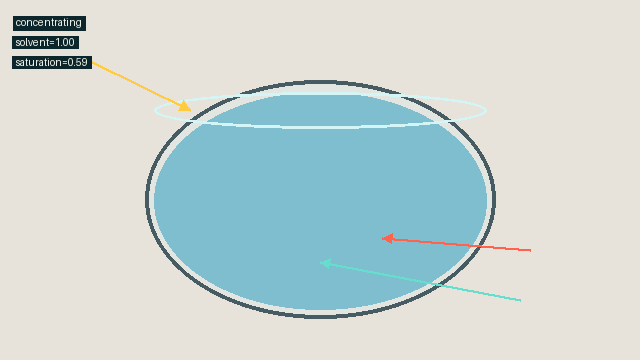
{kind=link}
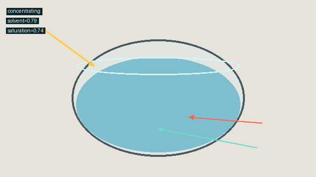
{kind=link}
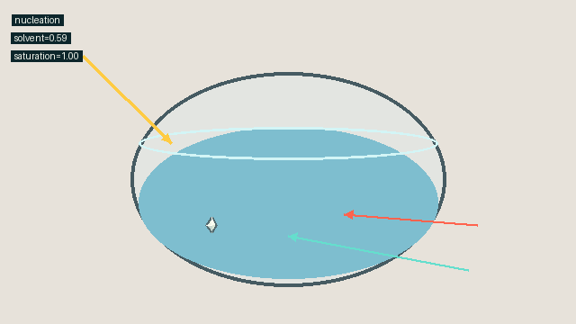
{kind=link}
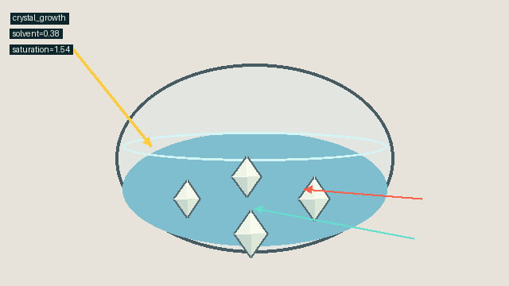
程序状态断言
solvent_decreases_and_concentration_increases：通过nuclei_appear_only_after_threshold：通过solute_mass_is_conserved：通过
K2 的语义层
| ID | 类型 | 含义 | 模型策略 |
|---|---|---|---|
chem02_dish_boundary | hard_boundary | 固定器皿外形和镜头。 | 由路由决定 |
chem02_liquid_region | region | 液面以下仍由溶液占据的像素。 | 由路由决定 |
chem02_concentration | scalar_field | 由溶剂体积和守恒质量计算的连续浓度。 | 由路由决定 |
chem02_crystal_region | region | 每颗已成核晶体的程序轮廓并集，数量和位置来自稳定对象身份。 | 由路由决定 |
chem02_crystal_identity | object_identity | 记录每个晶核的稳定 ID、位置与质量。 | 由路由决定 |
chem-02_annotation | annotation | 程序在写实底图之后叠加的重点箭头。 | 禁止 |
{kind=link}
BIO-02
保卫细胞膨压控制气孔开闭
机制目标：两个稳定保卫细胞随膨压共同改变中央气孔开度。
{kind=link}
{kind=link}
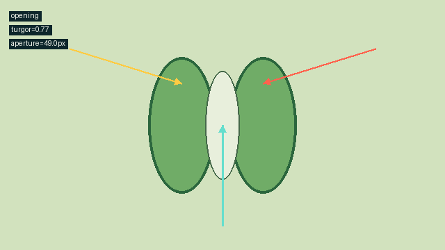
{kind=link}
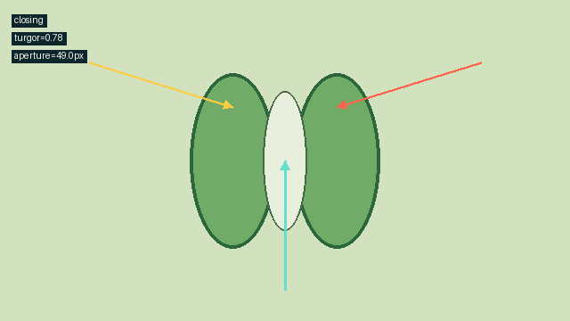
{kind=link}
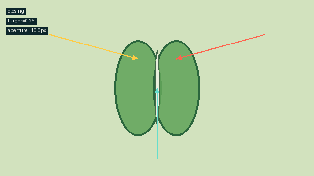
程序状态断言
exactly_two_guard_cells：通过aperture_tracks_turgor：通过opening_then_closing_is_visible：通过
K2 的语义层
| ID | 类型 | 含义 | 模型策略 |
|---|---|---|---|
bio02_guard_boundary | hard_boundary | 分别保存左右两个保卫细胞的轮廓。 | 由路由决定 |
bio02_guard_region | region | 只允许表面材质进入左右保卫细胞内部。 | 由路由决定 |
bio02_pore_region | region | 随膨压变化的中央孔隙。 | 由路由决定 |
bio02_turgor | scalar_field | 两个保卫细胞内部的连续隐变量。 | 由路由决定 |
bio02_guard_identity | object_identity | 左右两细胞稳定 ID。 | 由路由决定 |
bio-02_annotation | annotation | 程序在写实底图之后叠加的重点箭头。 | 禁止 |
{kind=link}
GEO-01
曲流裁弯形成牛轭湖
机制目标：曲流颈先变窄，切弯后主河连通而旧河湾成为独立水体。
{kind=link}
{kind=link}
{kind=link}
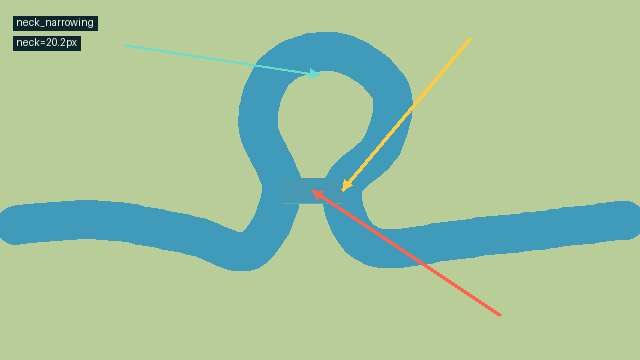
{kind=link}
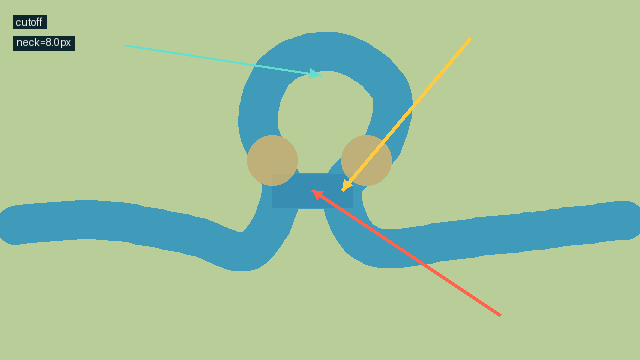
程序状态断言
meander_neck_narrows_monotonically：通过cutoff_occurs_after_narrowing：通过main_channel_remains_connected：通过
K2 的语义层
| ID | 类型 | 含义 | 模型策略 |
|---|---|---|---|
geo01_water_boundary | hard_boundary | 直接从程序水体拓扑取边，不从成图反推。 | 由路由决定 |
geo01_water_region | region | 主河道与可能形成的牛轭湖占用区。 | 由路由决定 |
geo01_flow | vector_field | 切弯前沿曲流、切弯后沿捷径向右流动。 | 由路由决定 |
geo01_waterbody_identity | object_identity | 旧河湾隔离后获得独立稳定 ID。 | 由路由决定 |
geo-01_annotation | annotation | 程序在写实底图之后叠加的重点箭头。 | 禁止 |
{kind=link}
第一项路线冒烟：GEO-01 水体材质
第一次输入审图发现程序宽折线有规则针孔，因此 EXP-P4-001 即使机器门 3/3 通过也被拒绝；修正程序后新建 EXP-P4-002，没有覆盖旧证据。Phase 5 又用真实水色连通域发现“状态称已隔离、像素仍连通”的第二层错误：现已把沉积塞 放到旧河道支路，并从 raster 反算出主河 1 个贯通组件 + 牛轭湖 1 个独立组件。 既有四张水纹供体直接重新投影，新增图片模型调用为 0。
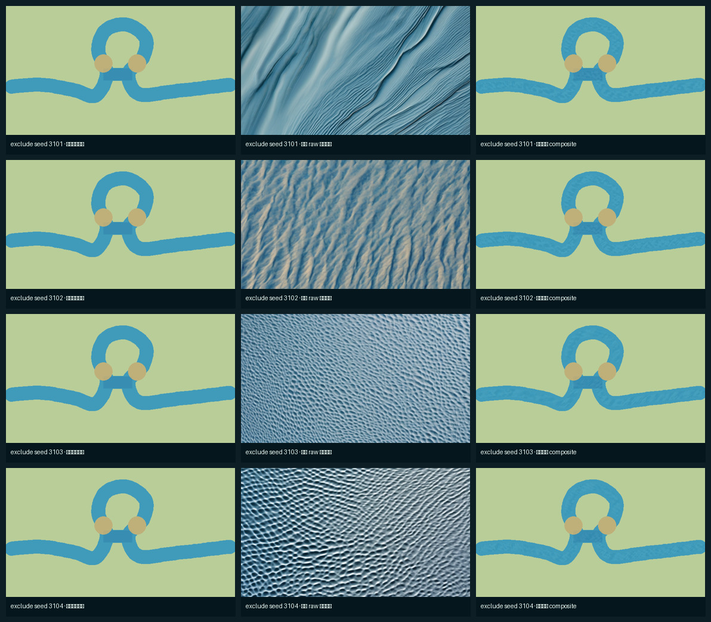
接受 gain=0.4 的 GEO-01 冒烟结果：修正后的河岸连续，水纹只进入主河与独立牛轭湖，陆地、封堵和全部受保护岸线逐像素不改。
| 非允许区最大像素差 | 0.0 |
|---|---|
| 低频结构 MSE | 0.05015 |
| 留一法最大 MAE | 0.189446 |
| 选择 | gain_040 |
{kind=link}
第二项路线冒烟：BIO-02 非水材料
4/4 供体都违反了 no veins，出现明显叶脉或细胞壁网络；不能直接作为成品，也不能用单供体残差。
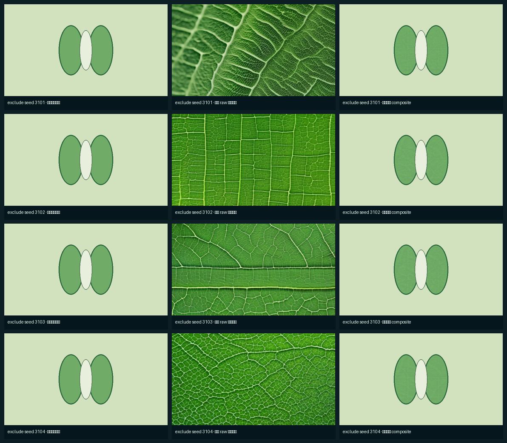
接受 gain=0.3 作为 BIO-02 当前案例候选：中位数与限幅把供体大叶脉压成轻微有机微纹理，只进入两个保卫细胞；中央气孔、边界和背景不改。
| 非允许区最大像素差 | 0.0 |
|---|---|
| 低频结构 MSE | 0.216275 |
| 留一法最大 MAE | 0.160048 |
| 材质提升 | 3/5 |
{kind=link}
第三项路线冒烟：CHEM-02 安全不等于有效
4/4 供体都没有生成均匀氯化钠晶面：分别更像纤维板、羽毛或霜、竖直玻璃管和玻璃格架，不能直接作为成品。
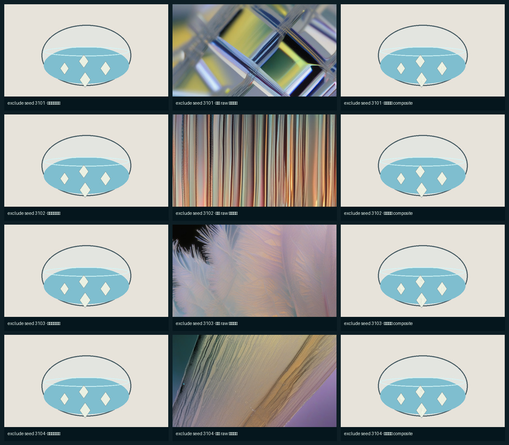
拒绝 gain=0.6：三项机器门都通过，只能说明投影安全；四颗晶体仍近似平涂，肉眼材质提升仅 1.5/5，未达到晋级线。
| 晶体允许区占全图 | 0.75% |
|---|---|
| 非允许区最大像素差 | 0.0 |
| 允许区平均细节变化 | 2.672801/255 |
| 材质提升 | 1.5/5（未达标） |
因此没有继续放大扩散残差。当前程序把每颗小晶体拆成四个确定性晶面： 数量、轮廓与质量守恒仍由状态决定，同时在最终画面尺寸上能看清体积关系。 若以后验证局部模型路线，必须另做“放大对象空间渲染”实验。
{kind=link}
{kind=link}
第四项路线冒烟：MATH-01 不强制照片化
4/4 供体都是无文字、无图形的暖白纸张材质；其中一张横向纸纹偏强，但四种子中位数把该方向性压低。
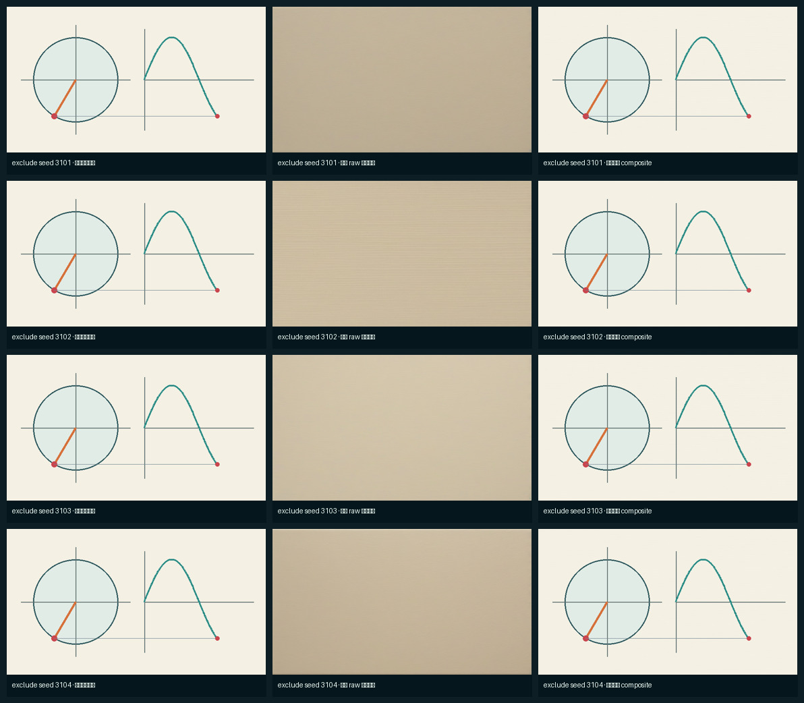
接受 gain=0.5 作为 MATH-01 可选纸张风格：纸纹轻微可见，圆、坐标轴、半径、正弦曲线和两个同步点逐像素不变；不把它称作照片级重绘。
| 底纸允许区占全图 | 78.71% |
|---|---|
| 数学图形区最大像素差 | 0.0 |
| 允许区平均细节变化 | 0.505875/255 |
| 定位 | 可选纸张风格；程序原图和模型关闭仍合格 |
{kind=link}
第五项路线冒烟：PHYS-02 精确器材表面
2/4 供体是合格的均匀哑光细纹；另两张分别出现规则格栅和大型折面，不能单独使用。四种子中位数抑制了这两类大结构。
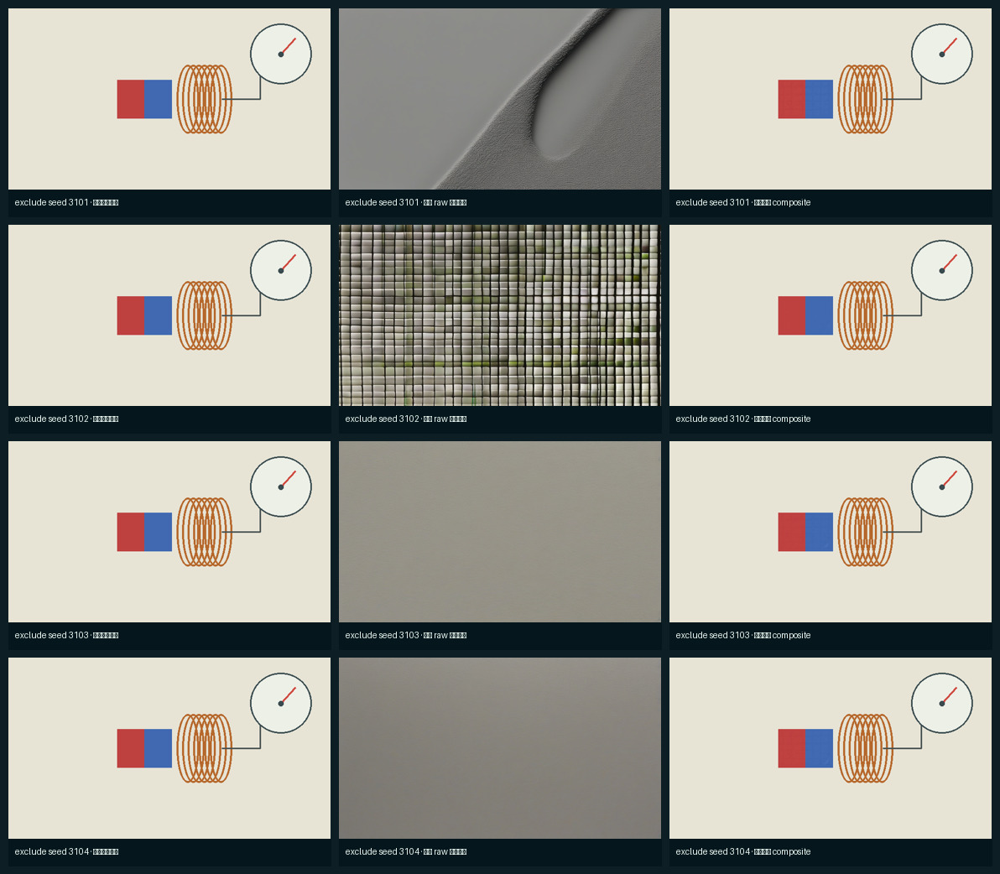
接受 gain=0.6 作为 PHYS-02 器材候选：轻微哑光细纹只进入移动磁铁，红蓝极性、磁铁轮廓、线圈、电流表和表针读数不变。
| 磁铁允许区占全图 | 2.93% |
|---|---|
| 非磁铁区最大像素差 | 0.0 |
| 允许区平均细节变化 | 0.926517/255 |
| 留一法最大 MAE | 0.031303 |
{kind=link}
当前自动判断
Phase 4 通过，自动进入 Phase 5。五个新增案例的机制断言、统一输出合同、 245 帧、固定种子稳定性和逐像素保护门禁均通过；有效、可选和被拒绝的模型路线都已 明确记录。下一阶段只让视频模型连接相邻的正确状态，不能让它补做概念规划。
.venv/bin/python -m modules.video_model.stage2.phase4 .venv/bin/python -m modules.video_model.stage2.phase4 --check